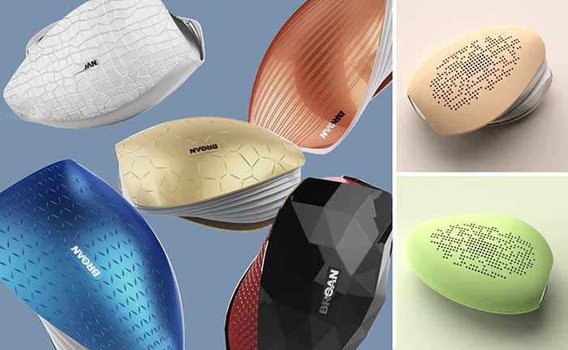

超轻便PM2.5检测仪:贴身的空气护卫
▲▲超轻便PM2.5检测仪设计。
自己身处何种空气质量中?能否时刻了解自己所处的空气质量如何？这样的问题一直被人们忽略，主要源于没有办法时刻对身边空气质量做判断。随着人们意识的提高，技术的进步，超轻便气体检测仪的设计就应运而生。

▲▲PM2.5显示数值融入到随机排列设计的通风孔中。

▲▲空气指数分为3档，用红黄蓝分别表示，简约而又直观。
▲▲超轻便身材，去到哪里都可以带着Ta。

▲▲CMF标准参考+市场竞品属性分析。
市场上空气质量检测仪已经有许多品牌，有西门子、小米等知名品牌，也有许多不知名品牌。因此在设计之初，将市场上的同类产品做了一番整理。通过功能性、便携性，产品的颜值、重量、价格等维度做了一番分析。结合公司对这个产品的开发计划，销售渠道及售价，最终确定了本次产品差异化开发原则：超轻便+单功能（PM2.5检测）

▲▲外观采用全参数化设计流程，多款方案做最终推敲。
三维设计阶段，采用全参数化的流程。参数的变化，带来外观造型上不同的细节变化，以此可以快速的在多款方案中推敲设计细节。
▲▲拔模角分析&分模线分析

▲▲对表面纹理的探索设计+配色设计
Industrial Design